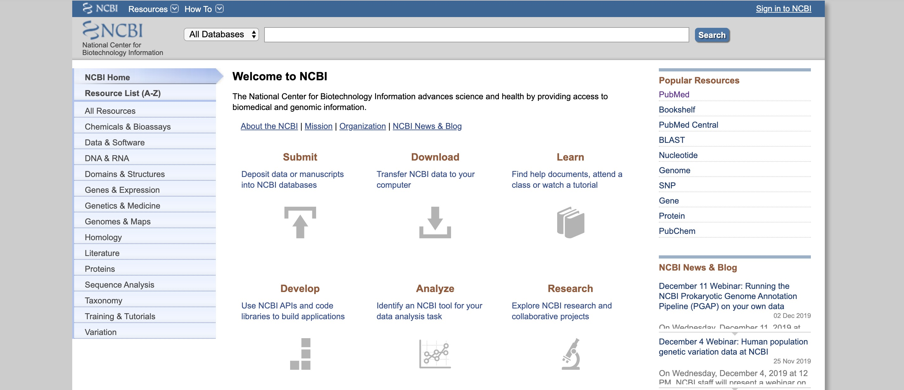
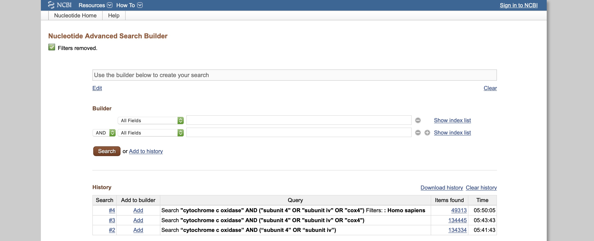

Sistemi di retrieval¶
Ci eserciteremo adesso ad utilizzare il sistema di retrieval ENTREZ per l’interrogazione delle Banche Dati ospitate presso l’NCBI.
Il sistema permette di combinare i criteri di ricerca utilizzando gli operatori logici l’intersezione (AND), l’unione (OR) o l’esclusione (NOT).
Riferiremo le nostre ricerche ad un particolare esempio, la Citocromo C ossidasi, che come saprete, è un complesso multimerico localizzato nella membrana mitocondriale interna, partecipante al trasporto degli elettroni nella catena respiratoria mitocondriale.
Essa è costituita da 13 peptidi di cui 3 codificati dal genoma mitocondriale e 10 dal genoma nucleare.
L’obiettivo dell’esercitazione è quello di selezionare i geni e le proteine corrispondenti alla subunità 4 umana utilizzando il sistema di interrogazione ENTREZ.
Nota preliminare: ricorda che le virgolette consentono di delimitare più parole da ricercare insieme e che più operatori logici possono essere utilizzati in una stessa ricerca usando le parentesi tonde come in un’espressione matematica.
Collegati al sito https://www.ncbi.nlm.nih.gov/;
Nel menù a tendina accanto alla casella di ricerca seleziona Nucleotide;

Richiedi la sequenza nucleotidica desiderata attraverso l’uso del seguente termine di ricerca:
"cytochrome c oxidase";782.730
Prova ad inserire degli errori nella nomenclatura (es:
"cytochrome c oxydase"oppure"cytocrome c oxidase"). Nota le differenze nel risultato e prova a dedurne il motivo;`"cytochrome c oxydase"` 165
`"cytochrome c oxydase"` 220
Restringiamo la selezione richiedendo solo le sequenze nucleotidiche della subunità 4. Utilizzeremo l’operatore logico AND;
a."cytochrome c oxidase" AND "subunit 4"
4.860
b.
"cytochrome c oxidase" AND "subunit iv"
2.612
NB: entrambe le nomenclature sono corrette, ma otteniamo un numero di entries diverso.
Per includere tutte le sequenze usa l’operatore logico OR
a."cytochrome c oxidase" AND ("subunit 4" OR "subunit iv")7.143
Puoi aumentare il numero di sequenze per la cytocrome c oxidase anche utilizzando la sigla “cox4”:
a."cytochrome c oxidase" AND ("subunit 4" OR "subunit iv" OR "cox4")7.220
Se siamo interessati a restringere le ricerche ad una specifica specie, ad esempio solo alle sequenze “umane”, possiamo modificare le opzioni note come Limits che trovate in alto a sinistra della pagina contenente la vostra ricerca. Se non è già presente
Homo sapiensclicchiamo su customize e scriviamo “Homo sapiens” nel menù che si aprirà.
Infine clicchiamo su “add”. In questo modo otterremo tutte le sequenze nucleotidiche specifiche dell’uomo.79
Prima di procedere al prossimo punto cliccare su “clear” per eliminare i limiti imposti precedentemente.
Alternativamente possiamo sfruttare uno strumento più potente per selezionare le sole sequenze cox4 umane selezionando l’opzione Advanced: a. Nel primo campo di ricerca aggiungere la ricerca
""cytochrome c oxidase" AND ("subunit 4" OR "subunit iv" OR "cox4")";
b. Selezionare l’operatore AND;
c. Selezionare il fieldorganisme scrivere “Homo sapiens”.

79
Scorrendo le sequenze potremmo notare che alcune corrispondono a Pseudogeni. Escludi le sequenze nucleotidiche annotate come “pseudogene” selezionando le sequenze attraverso la chiave
Pseudogene:
a. Ritorna su Advanced e interseca la query #? (derivata dalla ricerca precendente) con la query #? (corrispondente all’ultima ricerca) questa volta utilizzando l’operatore NOT: #? NOT #?
NB: Il numero di sequenze trovate si è ridotto.
<details><summary></summary>
<p>
<b>69</b>
</p>
</details>
Ottenute le nostre sequenze possiamo selezionare la sequenza che interessa (es: AF017115) e visualizzare le informazioni contenute nella entry.
Esercizio 1.¶
Utilizzando ENTREZ prova a selezionare la entry relativa all’mRNA per la proteina p53 di cane.
Suggerimenti:
Il simbolo ufficiale del gene è
tp53;il nome scientifico è
Canis familiaris;
Esercizio 2.¶
Esamina la entry selezionata nell’esercizio 1:
Determinate la lunghezza del trascritto, della regione codificante, del 5’UTR e del 3’UTR.
Esercizio 3.¶
Esamina la entry selezionata nell’esercizio 1.
Sei in grado di individiare la proteina associata?
Qual è il suo accession number?
Quanto è lunga la proteina?
Osservando la Feature Table cosa potete annotare?
Esercizio 4.¶
Utilizzando ENTREZ prova a selezionare la entry RefSeq relativa alla proteina "ATP synthase F0 subunit 8", il cui gene name ufficiale è ATP8 di Ciona robusta.
Esercizio 5.¶
Esamina la entry selezionata nell’esercizio 4 (YP_006341035.1).
Determina:
l’accession number della sequenza nucleotidica da cui è stata ricavata la entry;
la lunghezza della proteina e della sequenza nucleotidica che codifica per questa proteina.
Esercizio 6.¶
Determina il numero di proteine umane presenti nella banca dati.
Di queste proteine quante sono codificate dal genoma mitocondriale?
Esercizio 7.¶
Determina il numero di sequenze di rRNA 16S appartenenti al genere Escherichia sono disponibili nella banca dati.
Quante di queste non sono parziali?
Esercizio 8.¶
Interrogate la banca dati “Genome”.
Quanti genomi di
Escherichia colisono disponibili?Quanti di
Fusobacterium nucleatum?
Esercizio 9.¶
Proviamo adesso a ricercare qualcosa di più interessante.
Quanti genomi di
severe acute respiratory syndrome coronavirus 2sono disponibili?Aprite il link alla entry di riferimento e scaricate la sequenza genomica in formato
FASTA.
Esercizio 10.¶
Quanti sequenze di
severe acute respiratory syndrome coronavirus 2sono disponibili nella banca dati nucleotide?
Letture consigliate:
Valle G. et al. Introduzione alla Bioinformatica (Zanichelli Ed.) – pag. 7-12
Citterich M. et al. Fondamenti di Bioinformatica (Zanichelli)